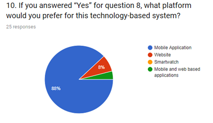

Questionnaires were chosen because it gathers a vast amount of responses based on the system. This was distributed specifically to student users to receive feedback from the student body on campus on how they would react to such a system. This was the foundation of the system’s design as the user inputs would be implemented to generate such a system.
The questionnaires were distributed to the student body at the UWI St. Augustine campus via google forms :
Questionnaire
There are a few feedback responses from the questionnaire distribution given below:
As shown in the diagram below, the majority of users purchase food at KFC the most.
In the diagram below, it states that most students refrain from purchasing food because of the long waiting time.
Majority of students said they waited in line at a food outlet and their order is not available.
In the questionnaire students were asked if they would use a technology-based system and as stated 96% said yes.
• Menu options
• Price listing
• Wait time
• Available meals
• Pick up order notification
Most students said they would prefer a mobile application for the technology-based system since it would provide accessibility and reliability.
